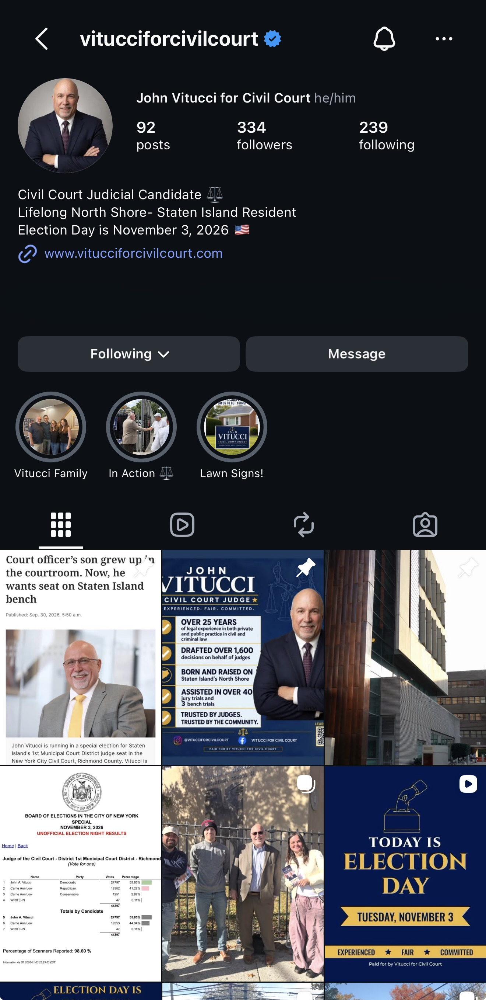
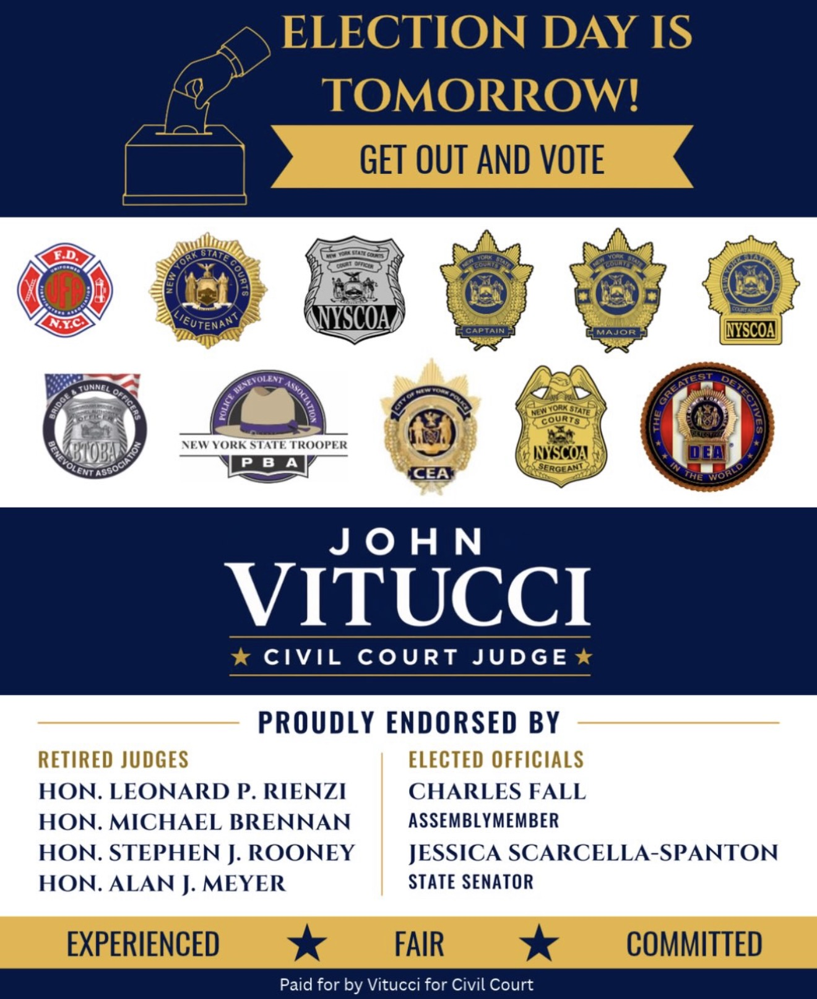

Here are some projects I've worked on through my classes at Newhouse, internships, and other experiences.
During John Vitucci's campaign for Civil Court Judge, I helped manage his social media presence by creating graphics, writing captions and developing content to connect with Staten Island voters.


Here is a newscast I worked on for my BDJ 312 class at Syracuse University.